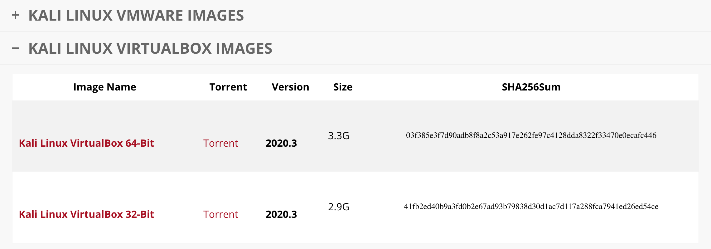
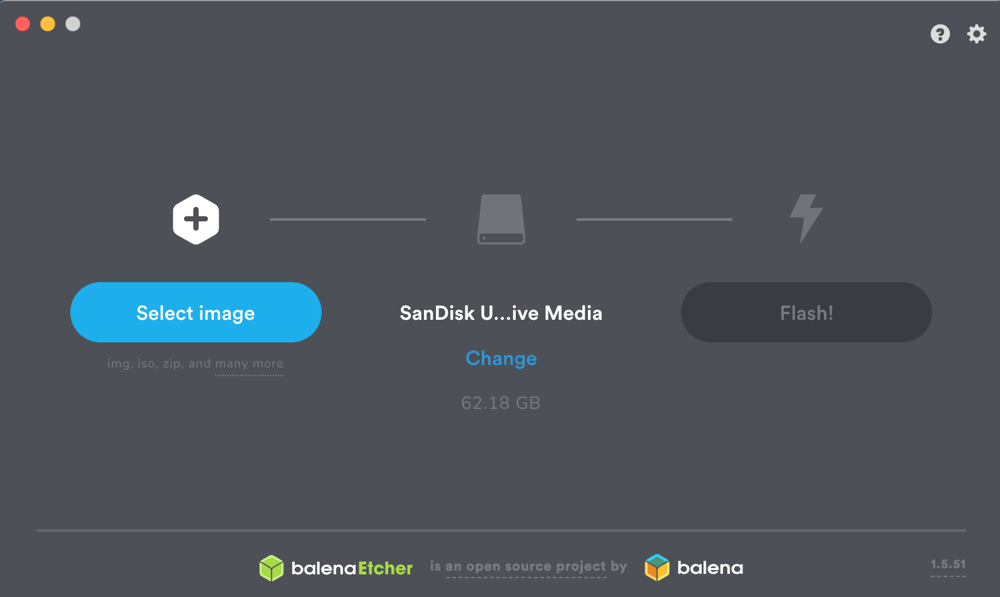
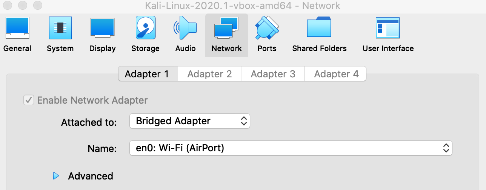

Network and MITM attacks
Pre-requisites
Computer/Laptop
Intel or AMD CPU
Minimum 4GB of RAM
60+ GB of hard disk space
Internet access
The more memory your computer has the better it will be because being able to run multiple VM's at once is very beneficial. When you run VM's you dedicated some RAM to those machines and operating smoothly is what everyone wants. Hard drive space is important too if you plan on having a multiple VM's as each can take up to 10GB each minimum.
"Professional" cybercriminal maniacs have their machines like:
Intel or AMD CPU
32+ GB of RAM
1 TB+ of hard disk space
Internet access
Download VirtualBox and the VirtualBox Extension Pack from:
https://www.virtualbox.org/wiki/Downloads
Once VirtualBox is installed double click on the VirtualBox Extension Pack you downloaded to install that to ensure VirtualBox runs smoothly for this course!
Download Kali VirtualBox
https://www.kali.org/downloads/

Download either the 64-Bit or 32-Bit version of Kali. This is different for everyone so if the one you downloaded doesn't load Kali then the other one will and now you'll know! ;) If it boots up and you're at Kali desktop then good!
If you have issues then download the Kali ISO and install it through virtualbox. If you can't run any of those then your machine just isn't up to par brothers.
If you're using Kali in a VM then you can skip to the next portion at "
Let's continue to setup our machine
".
Some people may want to use Kali as their main OS or boot Kali directly from USB. If you choose to do this then:
Download Kali ISO
Make sure you select the right ISO for you!
If you do that then we'll need to install the Kali Linux ISO onto USB so we can boot directly from it. You'll need a USB preferably with 6GB capacity or more. If you decide to use Kali in a VM this is fine as well.
Download Etcher to install an operating system (OS) on USB to start-up from:
https://www.balena.io/etcher
Once Etcher is installed plug in your USB, run Etcher, and click on "Select image", then select the Kali ISO, and click "Flash".

Once you've installed Kali to the USB you can now boot directly from it.
Click to Read - Learn how to boot from USB
Let's continue to setup our machine
Ok if you downloaded the Kali Virtualbox file it will be similar to "kali-linux-2020.3-vbox-amd64.ova" or "kali-linux-2020.3-vbox-i386.ova". Simply double click on the file to import it into VirtualBox for you. This may take a few minutes.
Once that's done let's setup the Kali machine.
Default username is "kali" and default password is "kali"
In Virtualbox, select your Kali VM, and click on Settings. Click on "Network" and make sure your network adaptor is set to "Bridged Adapter" and reflects your wireless card.

Once you've configured the network portion properly start your Kali VM and once Kali loads open Terminal and type the following into it:
sudo apt-get update && sudo apt-get install gedit bettercap dsniff driftnet python3-pip python-dev python-setuptools libpcap0.8-dev libnetfilter-queue-dev libssl-dev libjpeg-dev libxml2-dev libxslt1-dev libcapstone3 libcapstone-dev libffi-dev file -y && sudo apt autoremove -y
If you get any errors at all when running the above command such as:
"E: Could not get lock ...."
Run the commands below before running the above command again:
sudo rm /var/lib/dpkg/lock-frontend
sudo rm /var/lib/dpkg/lock
sudo rm /var/cache/apt/archives/lock
Once you've run all those commands you can the run the above update command with success.
UPDATE - August 19, 2020
It appears the latest bettercap update fucked some things up with MITM attacks so for now everyone should revert back to bettercap 2.20. Until a new release comes out that fixes the problem it's best to use an older release.
Download 2.20 release from:
wget https://github.com/bettercap/bettercap/releases/download/v2.20/bettercap_linux_amd64_2.20.zip
unzip bettercap_linux_amd64_2.20.zip
sudo apt remove bettercap
sudo ./bettercap
From there on in you can follow the commands in ACT II Chapter 10+ without issue.
When that's finished and you're back to Terminal then we're ready to go.
For best results moving forward:
An attacker computer running Kali in VM or booting directly from USB.
A separate computer to be the target (Windows 7+ or MacOS all updated preferably).
A home network (Preferably one you own and know the WiFi password along with router admin interface password as well).
Your Kali and target computer on the same network with internet connectivity.
Right then time to educate ourselves a bit on some items that are important to know. Let's get right into it comrades.
Click to continue to Chapter 3
Funshine's
Hacking Guides